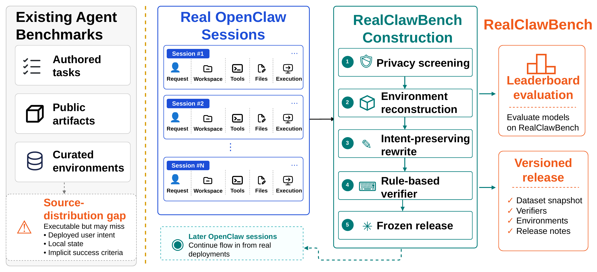

Session-to-task construction
From real OpenClaw sessions to reproducible benchmark releases
RealClawBench begins from real developer-agent sessions and applies privacy screening, environment reconstruction, intent-preserving rewrite, rule-based verifier construction, and frozen release packaging. This lets later OpenClaw windows become live benchmark versions without changing the historical main leaderboard.
